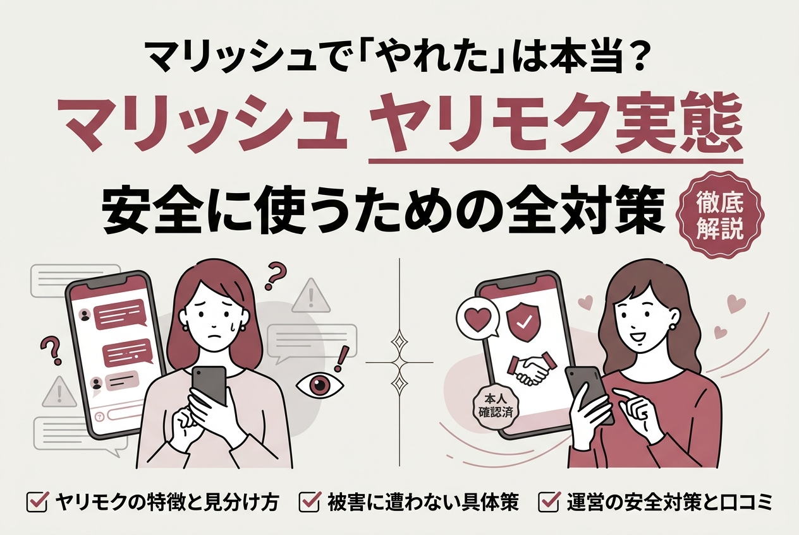
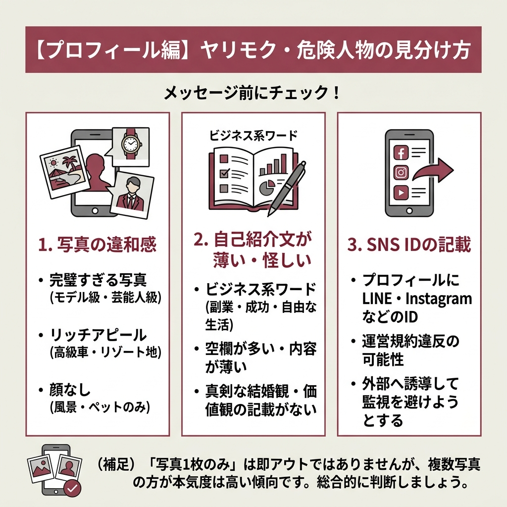
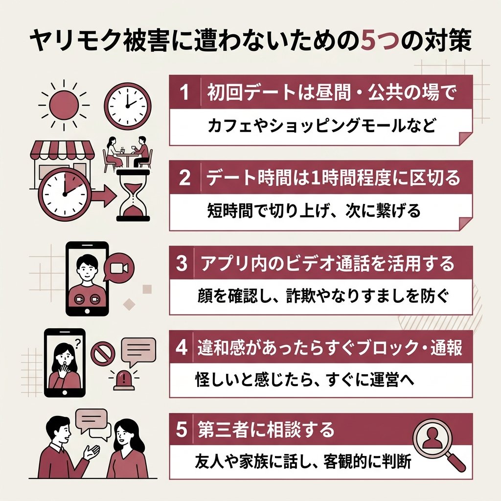

マリッシュで「やれた」は本当？ヤリモク実態と安全に使うための全対策

「マリッシュ やれた」で検索してこの記事にたどり着いたあなた。
気になっているのは、マリッシュにヤリモク（体目的）のユーザーがどれくらいいるのか、そして安全に使えるアプリなのか、という点ではないでしょうか。
結論から言うと、マリッシュは再婚活・婚活向けのまじめなマッチングアプリです。
ただし、どんなアプリにもヤリモク目的のユーザーは一定数紛れ込んでいます。
この記事では、上位表示されている複数サイトの情報と実際の口コミを徹底的に調べて、マリッシュでのヤリモク実態・見分け方・対処法をまとめました。
- 「マリッシュ やれた」と検索される4つの理由
- ヤリモク・要注意人物のプロフィールとメッセージの見分け方
- 被害に遭わないための具体的な対策
- マリッシュの安全対策と口コミから見える実態
「マリッシュ やれた」と検索される4つの理由
 出典: tradenote.xsrv.jp
出典: tradenote.xsrv.jpそもそもなぜ「マリッシュ やれた」なんて検索されるのか。
調べてみると、マリッシュ特有の会員構成が背景にありました。
バツイチ・シンママが多いという偏見
マリッシュの会員の約6割がバツイチやシングルマザーです。
「離婚経験がある＝簡単に関係を持てるのでは」という偏見が、この検索ワードを生んでいます。
ただ、実態はまったく違います。
バツイチの女性は男性を見る目が肥えている方が多く、シングルマザーは子育てで自由な時間が限られているため、むしろ慎重な方が多いのが実情です。
バツイチの人が多いアプリって、軽い出会い目的の人も多いのかな？
逆です。一度結婚を経験しているからこそ、次は慎重に選びたいと考えている方がほとんど。マリッシュは真剣度の高いアプリですよ。
ヤリモクユーザーが一定数いるから
これはマリッシュに限った話ではありません。
どのマッチングアプリにもヤリモク目的のユーザーは紛れ込んでいて、マリッシュが特別多いわけではないです。
むしろ婚活色が強いアプリなので、ヤリモクは活動しにくい環境にあります。
ワンナイト・やり逃げの報告があるから
一部の口コミで「初対面でホテルに誘われた」という報告があるのは事実です。
ただ、これも他のマッチングアプリと同様で、初回デートを昼間のカフェにするだけで簡単に回避できます。
2ch・5chの書き込みが拡散されているから
2ちゃんねる（5ch）にはマリッシュの要注意人物リストや体験談が書き込まれています。
こうした匿名掲示板の情報が検索結果に表示されることで、「やれた」というワードが広まっている面もあります。
マリッシュにいる要注意人物5つのタイプ
 出典: be-escort.com
出典: be-escort.com調べていくと、マリッシュで気をつけるべき人物は5つのタイプに分類できます。
ヤリモク（体目的）
本気で結婚を考えているわけではなく、体の関係だけを目的にしている人です。
マリッシュは婚活向けアプリのため他のアプリより少ないですが、ゼロではありません。
既婚者（不倫目的）
意外と見落としがちなのが、既婚者の存在です。
身分証での年齢確認はあるものの、既婚かどうかまではチェックされないのが現状。どのアプリでも起こり得ることですが、警戒は必要です。
マルチ・投資勧誘
「成功者に会わせたい」「すごい人を紹介する」——こんなフレーズが出てきたら赤信号です。
恋愛ではなく、ネットワークビジネスや投資案件の勧誘が本当の目的です。
国際ロマンス詐欺
プロフィール写真はモデル級、でも日本語はカタコト。
外国人を装って恋愛感情を利用し、金銭を騙し取ろうとする手口がこれにあたります。
宗教への勧誘
最初は普通に会話をしていたのに、急に「素敵な話がある」と言い出す人。
「悩みごとはない？」と親身に相談に乗るふりをして、集まりやイベントに誘ってきます。
- マッチング直後に会おうとする
- お金の話（投資・副業）を頻繁にする
- すぐにLINEやSNSへ誘導する
- プロフィールに結婚に関する記述がない
- 写真が不自然（加工しすぎ・1枚だけ・顔なし）

【プロフィール編】ヤリモク・危険人物の見分け方
メッセージをやり取りする前に、プロフィールの段階で見抜けるポイントがあります。
写真に違和感がある
モデル級のイケメン・美女、リゾート地の豪華な写真、高級車や時計の写真…。
これらはネットから拾った画像の可能性があります。
逆に写真が1枚だけ、顔が隠れている場合も身元を隠している可能性が高いです。
- 芸能人のように完璧すぎる写真
- 海外旅行・高級レストランなど「リッチアピール」ばかり
- 風景やペットの写真のみで本人の顔がない
- 極端な加工で原型がわからない
自己紹介文が薄い、または怪しいワードが入っている
真剣に婚活している人は、結婚観や価値観をしっかり書いています。
一方で「自由業」「個人事業主」としか書かれていなかったり、「副業」「成功」「自由な生活」といったビジネス系ワードが入っていたりする場合は、勧誘目的の可能性があります。
空欄が目立つプロフィールも、本気度が低いサインです。
SNSのIDが記載されている
プロフィールにInstagramやLINEのIDが書かれている場合は、外部へ誘導してアプリの監視を避けようとしている可能性があります。
マリッシュの運営規約でもSNS IDの記載は禁止されています。
写真が1枚しかない人は全員怪しいってこと？
「1枚＝即アウト」ではないですが、複数の写真を載せている人の方が本気度は高い傾向にあります。他の要素と合わせて総合的に判断してください。
【メッセージ編】こんなやり取りが来たら距離を置こう
プロフィールは問題なさそうでも、メッセージで本性が出ることがあります。
すぐに連絡先を聞いてくる
マッチング直後にLINEやInstagramの交換を求めてくる人は要注意です。
アプリの監視を避けて、直接やり取りしたい意図が見え隠れしています。
真剣な人ほど、アプリ内でじっくりやり取りしてから連絡先を交換する傾向にあります。
夜のデートばかり提案してくる
「今度の夜、飲みに行きませんか？」ばかりで、昼のカフェを提案しても乗ってこない。
ワンナイト目的のヤリモクにありがちなパターンです。
お金や投資の話が出てくる
「副業に興味ある？」「投資で成功した」「すごい人を紹介したい」…。
こうしたフレーズが出てきたら、ほぼ確実にビジネス勧誘です。
感情的に急かしてくる
「今すぐ会いたい」「運命を感じる」など、短期間で距離を詰めようとする人がいます。
冷静になれないような言葉で急かされたら、一度時間を置きましょう。
- 返信ペースがお互いに無理のない速さ
- 質問と回答のキャッチボールが自然にできる
- 結婚観や将来の話を嫌がらずにしてくれる
- 昼間のデートを快く承諾する
- 24時間いつでも即レスが来る（業者の可能性）
- 質問をはぐらかして自分の話ばかりする
- 会う前からスキンシップを匂わせる発言がある
- お金や仕事の話に持っていこうとする

ヤリモク被害に遭わないための5つの対策

マッチングアプリの初対面ほど嫌なものはないよね#shorts
見分け方がわかったら、次は具体的な対策です。
どれも簡単に実践できるので、今日から取り入れてみてください。
カフェやショッピングモールなど、人目のある場所を選びましょう。夜会わなければ、ワンナイトされるリスクは大幅に下がります。
長時間のデートは流されやすくなります。短時間で切り上げて、次のデートにつなげる方が安全です。
マリッシュにはアプリ内のビデオ通話機能があります。会う前に顔を確認できるので、写真詐欺やなりすましを防げます。
少しでも怪しいと感じたら、相手をブロックしてマリッシュの運営に通報しましょう。24時間365日の監視体制で、迅速に対応してくれます。
友人や家族に「こういう人とやり取りしている」と話すだけで、客観的な判断がしやすくなります。
ビデオ通話って相手に断られたらどうすればいい？
ビデオ通話を頑なに拒否する人は、プロフィール写真と実物が違う、あるいは何かを隠している可能性があります。無理に会わず、他の相手を探す方が賢明です。
マリッシュが安全なアプリといえる6つの根拠
 出典: be-escort.com
出典: be-escort.com「やばい」「危険」というイメージが先行しがちですが、マリッシュは安全性の高いアプリです。
調べてわかった具体的な根拠を挙げます。
24時間365日の監視体制
マリッシュは24時間体制でユーザーを監視しています。
不審な動きをするアカウントは自動検出され、警告や強制退会の対象になります。
身分証による年齢確認が必須
メッセージを送るには運転免許証やパスポートなどの身分証提出が必須です。
18歳未満は登録できない仕組みになっています。
インターネット異性紹介事業の届出済み
マリッシュは警察に「インターネット異性紹介事業」の届出を提出しています（受理番号：30160062002）。
公的機関の審査をクリアした正規のサービスです。
月額制でサクラを雇うメリットがない
マリッシュは月額制の料金体系です。
ポイント制アプリのようにメッセージごとに課金されるわけではないので、運営がサクラを雇って課金を促す仕組みが成り立ちません。
600万件以上のマッチング実績
これまでに600万件を超えるマッチングが成立しています。
実際にカップルや結婚に至ったケースも報告されており、真剣な出会いの場として機能している証拠です。
再婚活に特化した独自機能
「リボン機能」でシンママ・シンパパへの理解を示せたり、バツイチ・子持ちの方にはポイント優遇制度があったりと、再婚活を応援する仕組みが整っています。
遊び目的のユーザーが近寄りにくい土壌になっているのです。
マリッシュは「インターネット異性紹介事業」の届出を警察に提出しており、法律に基づいた運営を行っています。届出をしていないアプリと比較すると、安心感が大きいのがポイントです。
マッチングパートナーズ（be-escort.com）より
口コミからわかるマリッシュのリアルな評判
 出典: single-aiseki.com
出典: single-aiseki.com実際に使った人の声を調べると、良い面も悪い面もはっきり見えてきます。
良い口コミ：真剣な出会いが見つかる
悪い口コミ：マッチングしにくい面も
一方で、こんな不満の声もあります。
悪い口コミの多くは「マッチングしない」「会話が続かない」という内容で、ヤリモク被害の報告は少数派です。
裏を返せば、真剣な出会いを求めている人が多いからこそ、軽い気持ちのアプローチは通用しにくいともいえます。
マリッシュが向いている人・向いていない人
マリッシュが合うかどうかは、あなたの目的と年齢層によります。
| 項目 | 向いている人 | 向いていない人 |
|---|---|---|
| 年齢 | 30〜50代 | 20代前半 |
| 目的 | 真剣な婚活・再婚活 | 気軽なデート・友達探し |
| 婚歴 | バツイチ・子持ちOK | 初婚同士の出会い重視 |
向いている人
再婚希望者、30〜50代で結婚を見据えた出会いを探している方にはぴったりです。
シンママ・シンパパには優遇制度もあり、同じ境遇の人が多い安心感があります。
向いていない人
20代で初婚の相手を探したい人や、まずは気軽な恋愛から始めたい人には、ユーザー層が合わない可能性があります。
20代で再婚希望なんだけど、マリッシュは使えるかな？
もちろん使えます。ただ、メインの年齢層が30〜50代なので、同年代の相手は少ないかもしれません。20代であれば、他のアプリとの併用も選択肢に入れてみてください。
マリッシュの基本情報
ここでマリッシュの基本スペックを改めて整理しておきます。
| 運営会社 | 株式会社マリッシュ |
| 運営開始 | 2016年 |
| 累計会員数 | 約200万人 |
| マッチング実績 | 600万件以上 |
| 料金 | 女性無料 / 男性有料会員あり |
| 年齢層 | 30〜50代が中心 |
| 男女比 | 約5:5〜6:4 |
| 届出 | インターネット異性紹介事業 受理番号30160062002 |
| 利用環境 | アプリ / Webサイト 両対応 |
よくある質問
まとめ
- 「マリッシュ やれた」は偏見と一部の口コミが生んだ検索ワード
- マリッシュはヤリモクが多いアプリではなく、婚活・再婚活向けの真剣なサービス
- 要注意人物はプロフィールとメッセージで見分けられる
- 初回デートは昼間・公共の場、ビデオ通話の活用が有効な対策
- 24時間監視・身分証確認・届出済みなど安全対策は充実している
マリッシュは安全性の高い婚活アプリ。
正しい知識で自衛さえすれば、真剣な出会いが見つかる場所です。